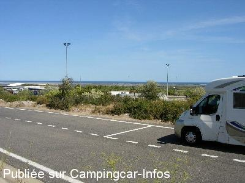
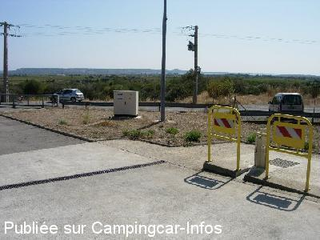

AA = Aire de services sur autoroute de :
A.9 France=>Espagne LA PALME
(N° 7)
Accès/adresse :
A9
11480 LA PALME
11480 LA PALME
Latitude : (Nord) 42.95072° Décimaux ou 42° 57′ 2′′
Longitude : (Est) 2.9684° Décimaux ou 2° 58′ 6′′
Tarif :
Type de borne : Autre
Services :


Autres informations :

Le 13/09/2009 par Daniel L

Le 13/09/2009 par Daniel L
de
yvan
le 20/04/2004 :
Habitant à Saint Cyprien (66), j'avais l'habitude de m'y arrêter en rentrant de week-end, mais la borne est depuis 2 ou 3 mois systématiquement bouchée donc maintenant je vidange à Narbonne Vinassan. De plus, l'aire est beaucoup plus pratique.
Habitant à Saint Cyprien (66), j'avais l'habitude de m'y arrêter en rentrant de week-end, mais la borne est depuis 2 ou 3 mois systématiquement bouchée donc maintenant je vidange à Narbonne Vinassan. De plus, l'aire est beaucoup plus pratique.